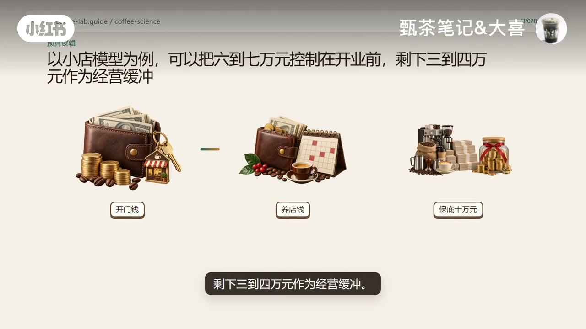
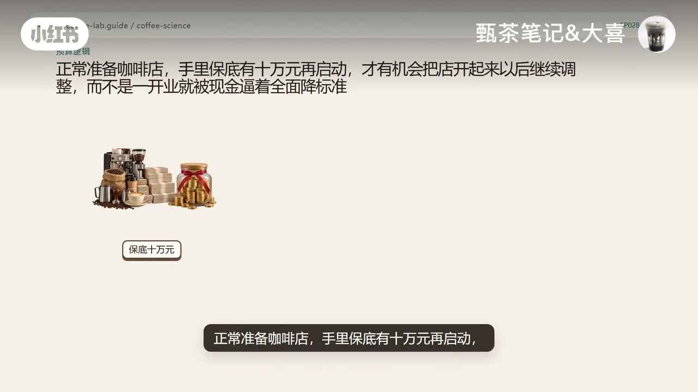

内容要点
小红书账号「甄茶笔记&大喜」直接回答「到底要准备多少钱」：手里只有五万元就先别开；正常准备建议保底十万元。真正要算的不是能不能把门打开，而是开门以后有没有养店钱撑过销量爬坡。视频把预算拆成开门钱与养店钱，用小店模型示意开业前六到七万、缓冲三到四万；再列出开业前一次性投入清单、开业后持续支出、降标准恶性循环，以及开店前三张表与四件事。下列实录按时间线展开；金额均为作者经营建议与画面示意，非某一城市或门店报价。
知识结构
五万不是启动线；勉强开门≠具备经营条件。作者建议保底十万元再启动。
押金转让装修设备原料等花完可能开门，但房租水电原料包装平台活动维护从第一天继续发生。
五万的硬伤是开业后没钱陪流量爬坡；被迫降设备/水电/原料标准后，复购更难、现金更紧。
同时准备开门钱与养店钱；小店示意六到七万开业前、三到四万缓冲；用现金覆盖月数算调整时间。
有钱也不全花开业前；贵设备/复杂装修要能提高效率、营业额、复购或降低停机风险。算清店型、一次性投入、月净流出、调整时间。
一次性投入表、月度收支表、保守销量现金余额表；五万不是低成本方案。下期预告保本杯量。
开店预算要同时准备「开门钱」和「养店钱」。作者观点：五万连开门都勉强、开业后更难维持；保底十万再启动，才有机会在开业后继续调整，而不是一开门就全面降标准。
00:00–00:32五万元先别开：开门不等于具备经营条件
标题卡先把问题钉死：开一家咖啡店，到底要准备多少钱？作者几乎立刻给出态度——如果你手里只有五万元，建议先不要开；画面大字写的是「五万元不是开店的启动线」，不是一句轻松的励志鼓励。
即便房租极低、没有高额转让费、装修和设备都压到极限，老板自己守店，也最多勉强开出十平方米以内的小微社区店。但「把门打开」和「具备经营条件」不是一回事：画面把开门的小店，和空钱包、账单堆叠的「没有养店钱」并置。真正要解决的，不是能不能开门，而是开门以后还能不能继续经营。作者给出自己的保底建议：手里有十万元再启动。
00:32–01:15只算开业第一天：清单花完能开门，开业却是持续花钱的开始
很多人算预算，只算到开业第一天。画面逐项展开：房租和押金、可能存在的转让费、装修和水电改造、门头、操作台、洗消和冷藏设施、咖啡设备、首批原料、包装、桌椅、收银和各种小工具。这些钱花完，店「可能」开起来——但作者立刻改口：开业不是花钱的终点，而是持续花钱的开始。
顾客不会在开业第一天就稳定进来，外卖销量和复购也不会立刻形成。与此同时，房租、水电、原料、包装、平台活动和设备维护，从第一天起就会继续发生；就算打算一个人顶，高峰或长营业时间也可能要请兼职或全职，收入还没稳，人力成本却已经按月开始付。（本段 Whisper 几乎空白，清单与句子以画面大字/烧录字幕重建。）
01:15–02:00五万的真正风险：爬坡期没钱，最后变成经营恶性循环
作者把五万元的问题说得更狠：不只是开业时紧，而是开业后账户可能没有钱陪店走过流量爬坡。现金一紧，往往不是只砍一笔开支——机器买得勉强，水电和排水能省就省，原料和包装只看最低价；人手不够时，推广、维护和测新品也会被搁置。
这些标准一起掉，结果是出品不稳、效率变低、体验变差，周转和复购更难抬升，现金于是更紧。画面用「现金收紧→恶性循环→小咖啡店」收束：一次预算不足，最后会变成整家店的经营恶性循环——这也是作者不建议用五万元开店的真正原因。
02:00–02:50两个账户：开门钱与养店钱；小店示意六到七万 / 三到四万
为什么正常建议保底十万元？因为开店预算必须同时准备两个账户：一个负责把店开起来（开门钱），一个负责把店养下去（养店钱）。以小店模型为例，画面给出一组示意拆分：开业前控制在六到七万元，剩下三到四万元作为经营缓冲——作者强调这不是全国统一标准，但至少保证开业当天账户里还有钱应对收入尚未稳定的阶段。
「这三到四万元能撑多久，不能靠感觉。」做法是保守估算每月收入，再减掉房租、人工、水电、平台、原料和其他支出；如果每个月仍然净流出，剩余现金能覆盖几个月，才是你真正拥有的调整时间。（「六到七万 / 三到四万」来自画面大字，勿当作某一城市报价。）

02:50–03:35有钱也不全花开业前；有效投入；先算清四件事
手里有十万元，也不代表可以把十万元全部花在开业前；更不能因为有二十万、三十万，就一定要把店做大、把机器买贵。更贵的设备、更复杂的装修，只有在确实提高出杯效率、营业额、复购，或者降低停机风险时，才可能是一笔有效投入——否则只是把以后需要收回的钱变多。
示意对照很直观：同样每个月赚一万元，前期投入八万元的店，和投入三十万元的店，回收难度完全不同。口播随即把「孤立总预算」拆成四件事：你要开什么店型、开业前一次性花多少、保守销量下每月还会净流出多少、开业后剩余的钱能留下多少调整时间。
03:35–04:07开店前三张表；五万不是低成本方案；下期算保本杯量
行动落点是三张表：一张列开业前一次性投入，一张列每月固定和变动支出，一张用保守销量测算开业后的现金余额；再把「必须现在买」和「以后赚钱了再加」的项目分开。
回到开头：五万元不是值得尝试的低成本方案，而是连开店都很勉强、开业后更难维持的预算。正常准备咖啡店，手里保底有十万元再启动，才有机会把店开起来以后继续调整，而不是一开业就被现金逼着全面降标准。片尾留下互动：你更想看外卖档口，还是有座位的社区店，具体要卖多少杯才能养活自己？并预告下一期算小店每月要卖多少杯才能跨过保本线——本期没有给出具体保本杯量数字。

详细文字转录（17段）
以下内容按 Whisper 原始分段完整呈现，可能包含识别误差与空洞；正文已按画面与语境校正（如「店型」「再加的项目」），转录区保持原样以便核对。
開一家咖咖咖咖店到底要準備咖咖咖錢
開門以後還能不能繼續經營
很多人人人人人人人人人人人人人人人人人人人人人人人人
.
和一家投入30萬元的店回收投入的難度完全不同
所以真正該計算的不是一個孤立的總預算而是四件事你要開什麼店行
開業前一次性花多少
保守銷量下每個月還會淨流出多少
開業後剩餘的錢能給你留下多少調整時間
準備開店前先做三張表一張列開業前的一次性投入一張列每月固定和變動支出
一張用保守銷量測算開業後的現金餘額
再把必須現在買的和以後賺錢了在家的項目分開
所以回到開頭
五萬元不是值得嘗試的低成本方案而是一筆連開店都很勉強開業後更難維持的預算
正常準備咖啡店手裡保底有十萬元再啟動
才有機會把店開起來以後繼續調整而不是一開業就被現金逼著全面降標準
你更想看外賣檔口還是有座位的社區店具體要賣多少杯才能養活自己